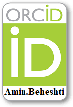
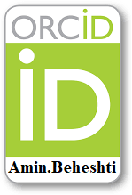
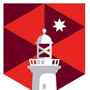
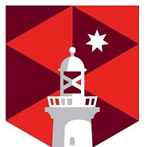
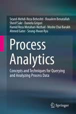

Awards & Scholarships
-
Awarded the followings:
- Grants (Total Funding: $1,639,303.42):
- Beheshti, A. (CI), "AI-enabled Banking"; Linkage: Tata Consultancy Services (TCS) and Macquarie University, 2019-2023
- Beheshti, A. (CI), "Intelligence-led Teaching and Learning"; Linkage: ITIC Training and Resourcing and Macquarie University, 2019-2023
- Beheshti, A. (CI), Asadniaye, M. (CI), Sheng, M. (CI), Yang J. (CI), "AI-enabled Industry"; Linkage: Faethm Pty Ltd. and Macquarie University, 2019-2020
- Beheshti, A. (CI), "Enterprise Insight Analysis"; Linkage: Prospa Advance Pty. and Macquarie University, 2019-2022
- Asadniaye, M. (CI), Warkiani, M. (CI), Mukhopadhyay, S. (CI), George, B. (CI), Jatmiko, W. (CI), Kotapalli, A. (CI), Beheshti, A. (CI), Razmjou Chaharmahali, A. (CI), "A compact and portable electrochemical gas sensor array to spot explosives"; Australian Academy of Science, UTS and MQ, 2019-2021
- Beheshti, A. (CI), "Price optimisation using deep reinforcement learning"; Linkage: Intellify Pty Ltd. and Macquarie University, 2019-2022
- Beheshti, A. (CI), "Linking Cognitive Science and Computer Science"; MQ FSE VRF Grant, Macquarie University, 2019
- Beheshti, A. (CI) & Yang, J. (CI), "Cognitive Social Network Analytics"; MQNS Grant, Macquarie University, 2018-2020
- Ghafari, S., Beheshti, A. (CI), Joshi, A., "Trust prediction in online social networks"; CSIRO-PhD Scholarship, 2018-2019
- National Security Impact Award, Technology Transfer from CaseWalls Project to Investigation Management System, D2D.CRC, 2017
- Recognition Award, Data to Decision CRC, 2017
- Outstanding Reviewer, Elsevier, 2017
- National Security Impact Award, Integrated Law Enforcement Project, D2D.CRC, 2016
- Recognition Award, Data to Decision CRC, 2016
- Postdoctoral Writing Grant, UNSW Australia, 2013
- Postgraduate Research Support Scheme (PRSS), UNSW Australia, 2011
- Supplementary Engineering Award (SEA), UNSW Australia, 2009-2012
- Engineering Excellence Top-Up Scholarship (EETS), UNSW Australia, 2009-2012
- Australian Postgraduate Award (APA), Australian Government, 2009-2012
- Graduated with First Class Honours M.Sc.
- Graduated with First Class Honours B.Sc.
- Have passed the PhD examination where all examiners gave the highest score.
- Selected as an outstanding lecturer in the Ministry of Science, Research & Technology, Zand Institute of Higher Education, 2008.
- Accepted in the Department of Computer Science and Engineering, Sharif University of Technology Iran-wide doctoral exam (First Honour Quota), 2008. Remarks: I cancelled my PhD in Sharif University of Technology, because I had decided to continue my studies in Australia.
Research Students (Academic Siblings):
Publications
 

 

AUTHORED BOOKS:
- Beheshti et al. , "Process Analytics: Concepts and techniques for querying and analysing big process data", ISBN 978-3-319-25037-3, Springer, 2016.
- Beheshti, "Organizing, Querying, and Analyzing Ad-hoc Processes' Data", PhD thesis, University of New South Wales, Australia, 2012.
Edited Books and Book Chapters:
- Beheshti et al. , "BP-SPARQL: A Query Language for Summarizing and Analyzing Big Process Data", Springer, 2019.
- Beheshti et al. , "Service Research and Innovation, LNBIP 234, Springer, 2018.
- Beheshti et al. , "Introduction to Process Analytics", Springer, 2016.
- Beheshti et al. , "Process Matching Techniques", Springer, 2016.
- Beheshti et al. , "Model-Based Business Process Query Techniques and Languages", Springer, 2016.
- Beheshti et al. , "Business Process Data Analysis", Springer, 2016.
- Beheshti et al. , "Process Analytics: Tools, Use Cases, and Discussions", Springer, 2016.
- Rajabi et al., "Interlinking Big Data and Web of Data". Big Data Optimization, Springer, 2015.
|

|
|
Journal:
- Beheshti et al., "DataSynapse: A Social Data Curation Foundry". Distributed and Parallel Databases (DAPD) Journal, 37(3): 351-384, 2019 (ERA Rank: A)
- Beheshti et al., "CoreKG: a Knowledge Lake Service", PVLDB 11(12), 2018 (ERA Rank: A*)
- Beheshti et al., "ProcessAtlas: A Scalable and Extensible Platform for Business Process Analytics". Software Practice And Experience Journal, 2018 (ERA Rank: A)
- Beheshti et al., "A Systematic Review and Comparative Analysis of Cross-Document Coreference Resolution Methods and Tools", Computing Journal, 99(4), 313-349, 2017 (ERA Rank: A)
- Beheshti et al., "Scalable Graph-based OLAP Analytics over Process Execution Data", Distributed and Parallel Databases (DAPD) Journal, 34(3), 379-423, 2016 (ERA Rank: A).
- Hammoud et al., "DREAM: Distributed RDF Engine with Adaptive Query Planner and Minimal Communication". PVLDB 8(6): 654-665, 2015, (ERA Rank: A*).
- Batarfi et al., "Large Scale Graph Processing Systems: Survey and An Experimental Evaluation", Cluster Computing Journal, DOI: 10.1007/s10586-015-0472-6, 2015.
- Allahbakhsh et al., "Representation and Querying of Unfair Evaluations in Social Rating Systems", Computers and Security 41: 68-88, 2014. (ERA Rank: B)
Conference:
- Beheshti et al., "personality2vec: Enabling the Analysis of Behavioral Disorders in Social Networks", 13th ACM International WSDM Conference (WSDM), Houston, Texas, USA, 2020. (ERA Rank: A*)
- Tabebordbar, Beheshti et al., "Adaptive Rule Adaptation in Unstructured and Dynamic Environments", 20th International Conference on Web Information Systems Engineering (WISE), Hong Kong, China, 2019. (ERA Rank: A)
- Tabebordbar, Beheshti et al., "ConceptMap: A Conceptual Approach for Formulating User Preferences in Large Information Spaces", 20th International Conference on Web Information Systems Engineering (WISE), Hong Kong, China, 2019. (ERA Rank: A)
- Yakhchi, Beheshti et al., "Enabling the Analysis of Personality Aspects in Recommender Systems", 26th Pacific Asia Conference on Information Systems (PACIS), Xian, China, 2019 . (ERA Rank: A)
- Beheshti et al., "Towards Context-aware Social Behavioral analytics", 17th International Conference on Advances in Mobile Computing & Multimedia (MoMM2019), Munich, Germany, 2019.
- Ghafari et al., "DCAT: A Deep Context-Aware Trust Prediction Approach for Online Social Networks", 17th International Conference on Advances in Mobile Computing & Multimedia (MoMM2019), Munich, Germany, 2019.
- Ghafari et al., "Social Context-Aware Trust Prediction: Methods for Identifying Fake News", 19th International Conference on Web Information Systems Engineering (WISE), Dubai, UAE 2018. (ERA Rank: A)
- Beheshti et al., "iProcess: Enabling IoT Platforms in Data-Driven Knowledge-Intensive Processes", 16th conference on Business Process Management (BPM), Sydney, Australia, 2018 (ERA Rank: A)
- Beheshti et al., "CrowdCorrect: A Curation Pipeline for Social Data Cleansing and Curation", 30th International Conference on Advanced Information Systems Engineering (CAiSE), Estonia, 2018. (ERA Rank: A)
- Schiliro, Beheshti et al., "iCOP: IoT-enabled Policing Processes", The 16th International Conference on Service-Oriented Computing (ICSOC), HangZhou, China, 2018. (ERA Rank: A)
- Amouzegar, Beheshti et al., " iSheets: A Spreadsheet-based Machine Learning Development Platform for Data-driven Process Analytics", The 16th International Conference on Service-Oriented Computing (ICSOC), HangZhou, China, 2018. (ERA Rank: A)
- Ghafari et al., "SetTRUST: Social Exchange Theory Based Context-Aware Trust Prediction In Online Social Networks", 19th International Conference on Web Information Systems Engineering (WISE) - QUAT Workshop, Dubai, UAE 2018. (ERA Rank: A)
- Yakhchi et al.,"PCN: A Personality-Aware Cross-Network Recommendations", 19th International Conference on Web Information Systems Engineering (WISE) - QUAT Workshop, Dubai, UAE 2018. (ERA Rank: A)
- Tabebordbar, Beheshti, "Adaptive Rule Monitoring System", 40th International Conference on Software Engineering (ICSE-SE4COG), Sweden, 2018. (ERA Rank: A) *Best Paper Award*
- Rastan et al., "TEXUS: Table Extraction System for PDF Documents", Australasian Database Conference (ADC), Gold Coast, Australia, 2018.
- Shahbaz, Beheshti et al., "iRecruit: Towards Automating the Recruitment Process", Seventh Australasian Symposium on Service Research and Innovation (ASSRI'18), Sydney, Australia, 2018.
- Beheshti et al., "CoreDB: a Data Lake Service", 26th ACM International Conference on Information and Knowledge Management (CIKM), Singapore, 2017. (ERA Rank: A)
- Salama et al., "Multi-Level Privacy-Preserving Access Control as a Service for Ambient Assisted Living", 24th IEEE International Conference on Web Services (ICWS), Hawaii, USA, 2017. (ERA Rank: A)
- Beheshti et al., "On Automating Basic Data Curation Tasks", 26th International World Wide Web Conference (WWW), Perth, Australia, 2017. (ERA Rank: A)
- Beheshti et al., "Galaxy: A Platform for Explorative Analysis of Open Data Sources", 19th International Conference on Extending Database Technology (EDBT), Bordeaux, France, 2016. (ERA Rank: A)
- Sun et al.,"Scalable SaaS-based Process Customization with Case Walls", 13th International Conference on Service-Oriented Computing (ICSOC), India, 2015. (ERA Rank: A).
- Maamar et al., "A Framework of Enriching Business Processes Life-Cycle with Tagging Information", Australasian Database Conference (ADC), Melbourne, Australia, 2015.
- Salih et al., "A Preliminary Approach to Domain-based Evaluation of Users' Trustworthiness in Online Social Networks," IEEE-BigData'15, New York, USA, 2015.
- Salih et al., "Towards A Methodology for Social Business Intelligence in the era of Big Social Data incorporating Trust and Semantic Analysis," Springer DaEng'15, Indonesia, 2015.
- Barnawi et al., "On Characterizing the Performance of Distributed Graph Computation Platforms". Proceedings of the 6th TPC Technology Conference on Performance Evaluation and Benchmarking (TPCTC 2014), China.
- Beheshti et al., "Enabling the Analysis of Cross-Cutting Aspects in Ad-hoc Processes", 25th International Conference on Advanced Information Systems Engineering (CAiSE'13), June 17-21 2013, Valencia, Spain, 2013. (ERA Rank: A)
- Allahbakhsh et al., "Collusion Detection in Online Rating Systems", The 15th International Asia-Pacific Web Conference (APWeb'13), Sydney, Australia, April, 2013.
- Beheshti et al., "A Framework and a Language for On-Line Analytical Processing on Graphs", 13th International Conference on Web Information System Engineering (WISE'12), pages 213-227, Paphos, Cyprus, November 28-30, 2012. (ERA Rank: A).
- Beheshti et al., "FPSPARQL: A Graph Query Engine as a Service", Second Australasian Symposium on Service Research and Innovation (ASSRI'12), Sydney, Australia, November, 2012.
- Allahbakhsh et al., "Reputation management in crowdsourcing systems". 8th IEEE International Conference on Collaborative Computing: Networking, Applications and Worksharing (CollaborateCom'12): 664-671, 2012.
- Beheshti et al., "A query language for analyzing business processes execution". 9th International Conference on Business Process Management (BPM'11), pages 281-297. Springer-Verlag Berlin Heidelberg, 2011, Clermont-Ferrand, France. (ERA Rank: A).
Open Source Projects:
Technical Report:
- Beheshti et al., "Data Curation APIs". CoRR abs/1612.03277 (2016)
- Beheshti et al., "Big Data and Cross-Document Coreference Resolution: Current State and Future Opportunities". CoRR abs/1311.3987 (2013)
- Beheshti et al., "Temporal Provenance Model (TPM): Model and Query Language". CoRR abs/1211.5009 (2012).
- Beheshti et al., "Extending SPARQL to Support Entity Grouping and Path Queries". CoRR abs/1211.5817 (2012).
- More Technical Reports, visit: http://cgi.cse.unsw.edu.au/~reports/
Teaching
Professional Academic Activities
-
Keynote and Tutorial
-
Tutorial: "Intelligent Knowledge Lakes: The Age Of Artificial Intelligence And Big Data"
Web Information System Engineering (WISE) Conference [ERA Rank A], Hong Kong China, November 2019.
-
Panel and Speaker: "Intelligent Knowledge Lakes as the foundation for big data analytics"
Advancing APS Data Analytics Conference Canberra, Australia, October 2019.
-
Keynote: "AI-Enabled Policing Processes"
Emerging Risk - Artificial Intelligence Conference, Australia Federal Police Canberra, Australia, July 2019.
-
Panel Chair: "AI-enabled Policing"
Intelligence-Led Policing Hackathon Sydney, Australia, July 2019.
-
Keynote: "Intelligence-led policing in the age of AI and Big Data"
Intelligence-Led Policing Hackathon Sydney, Australia, July 2019.
-
Talk: "Intelligence-led Big Data Analytics in a 5G World"
5G Business Summit Sydney, Australia, June 2019.
-
Panel Chair: "How to leverage your data to enable AI success"
AI Summit NSW, Sydney, Australia, May 2019.
-
Talk: "Successful AI Strategy in Data-Driven and Knowledge-Intensive Government Processes"
Artificial Intelligence for Government Conference Canberra, Australia, February 2019.
-
Panel Chair: "Measuring the Value of University (Computer/Data Science) Research"
Australasian Computer Science Week (ACSW), Sydney, Australia, January 2019.
-
Tutorial: "From Data Lakes to Knowledge Lakes: The Age of Big Data Analytics"
Web Information System Engineering (WISE) Conference [ERA Rank A], Dubai UAE, November 2018.
-
Keynote: "Knowledge Lakes in the Age of Big Data"
Big Data & Analytics Innovation Summit, Sydney, Australia September 2018.
-
Keynote: "Blockchain and the Future of our Economy"
Blockchain Hackathon, Sydney, Australia, September 2018.
-
Keynote: "AI for Education: Cognitive Assistance to Help Students and Teachers"
NSW Schools Teacher's Workshop, Sydney, Australia, July 2018.
-
Panel Chair: "The Value of Computer Science Education in Schools"
NSW Schools Teacher's Workshop, Sydney, Australia, July 2018.
-
Keynote: "Big Data and the Future of Our Kids"
Big Data Hackathon, , Sydney, Australia, July 2018.
-
Organizing Committee Member
- Organizer, Big Data Society Cloud and Data Centers Workshop, 2019 (LINK)
- Sponsorship Chair, Australasian Computer Science Week (ACSW), 2019 (LINK)
- General Chair, Eight Australasian Symposium on Service Research and Innovation (ASSRI), 2018 (LINK)
- Organizer, Big Data Society Blockchain Hackathon and Workshop, 2018 (LINK)
- Organizer, Big Data Society BigData Hackathon and Workshop, 2018 (LINK)
- Organization and Web Chair, Business Process Management (BPM) Conference, 2018 (LINK)
- Program Chair, Seventh Australasian Symposium on Service Research and Innovation (ASSRI), 2017 (LINK)
- Publicity Chair, Business Process Management (BPM) Conference, 2015 (LINK)
-
Program Committee Member
- BPM, EDOC, SERA, CSII, ICIS, BCD, AI, SNPD, APSCC, EUSPN, ACIS, ICEBE, INTAP, BCD, BUSTECH, ACC, etc.
-
Book Reviews
-
Journal Reviews
- Transactions on Knowledge and Data Engineering (TKDE), IEEE
- Information Systems, Elsevier
- Computing, Springer
- ACM Transactions on the Web (TWEB)
- Pervasive and Mobile Computing, elsevier
- Computer Standards & Interfaces, elsevier
- Transactions on Services Computing, IEEE
- Transactions on Cloud Computing, IEEE
- Cluster Computing, Springer
- Journal of Data Semantics, Springer
- Concurrency and Computation - Practice and Experience - Wiley
- Transactions on Internet Technology (TOIT), ACM
-
Conference Reviews
- Conference Reviews: BPM, WWW, CAiSE, ICSOC, DASFAA, ER, ICWS, EDOC, ICWE, CloudCom, ADC, etc.
Certificates
Microsoft Certified MCPD, MCTS, MCSD, MCAD, MCP since 2004.
Techical Experience
- Cloud computing: MapReduce, Google App Engine, Amazon EC2
- Languages: C#, Java, C/C++, VB.NET
- Browser Scripting: JavaScript, HTML DOM, DHTML, VBScript, AJAX, jQuery, JSON
- Server Scripting: SQL, ASP, ADO, PHP, JSP
- NLP tools and techniques, e.g., OpenNLP, Stanford NLP, and Lingpipe.
-
Services:
- Protocols: HTTP, SOAP, Web Services
- Service Description: WSDL, BPEL
- Security: XML Encryption, XML Signature
- XML technology: XML, DTD, XML DOM, XSLT, XPath, XQuery, Schema, SVG
- Semantic Web: RDF, OWL, SPARQL
- Mark-up languages: XML, XSL, HTML, CSS
- Design techniques: UML, OO design, Web services
- Programming tools: Google Web Toolkit, ANT, Make, CVS, SVN
- Programming IDE: Eclipse, Visual Studio
- Databases: DB2, PostgreSQL, Microsoft SQL Server, MySQL
Contact
- email: amin.beheshti@mq.edu.au
- phone: +61 (2) 9850 6344
- fax: +61 (2) 9850 9551
- Address: Data Analytics Research Lab, Departmnt of Computing, Macquarie University, Sydney, Australia
|
|